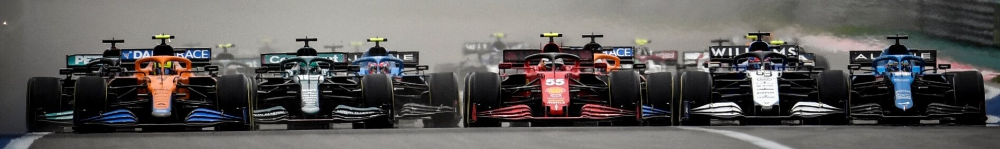

La formule 1, communément abrégée en F1, est une discipline de sport automobile considérée comme la catégorie reine de ce sport.
Elle a pris au fil des ans une dimension mondiale et elle est, avec les Jeux olympiques et la coupe du monde du football, l'un des événements sportifs les plus médiatisés. Chaque année depuis 1950, un championnat mondial des pilotes est organisé, complété depuis 1958 par un championnat mondial des constructeurs automobiles. La compétition est basée sur des Grands Prix, courses à bord de voitures monoplaces disputées sur circuits routiers fermés permanents mais parfois tracés en ville et temporaires, comme à Monaco, Singapour, et Bakou.
Cette discipline sportive, régie par la Fédération internationale de l'automobile (FIA), est gérée par le Formula One Group et un ensemble de sociétés satellites contrôlées par Liberty Media. Après l'ère des artisans des années 1960 et 1970, elle a peu à peu attiré les grands constructeurs automobiles mondiaux qui y investissent des sommes élevées, en espérant tirer profit des retombées médiatiques d'éventuels succès. La Formule 1 est considérée comme la vitrine technologique de l'industrie automobile qui y expérimente des nouveautés techniques, parfois issues de la technologie spatiale et susceptibles d'être adaptées ensuite sur les voitures de série, à l'image de la technologie hybride à partir de 2014.
Outre la compétition, le terme Formule 1 désigne l'ensemble des règles techniques des voitures monoplaces qui sont mises à jour tous les ans par la FIA. Ces règles sont très strictes sur les dimensions des voitures, la cylindrée des moteurs, les technologies mises en œuvre ; elles définissent également les mesures de sécurité des voitures pour assurer la protection du pilote. Les monoplaces de course répondant aux caractéristiques de la réglementation de la Formule 1 sont généralement désignées sous le terme générique de Formules 1. Les relations entre le Formula One Group propriétaire de la F1, la Fédération internationale de l'automobile et les écuries participant au championnat sont régies par les Accords Concorde qui ont été renouvelés en 2020 pour une période courant jusqu'à 2025.
La Scuderia Ferrari détient le record du nombre de titres au championnat des constructeurs avec 16 victoires. Le record chez les pilotes est détenu par Michael Schumacher et Lewis Hamilton avec sept sacres chacun. Ce dernier est également depuis 2020 le recordman en termes de victoires (102), de pole positions (102) et de podiums (180).
© Copyright Ben - 2021